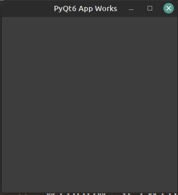
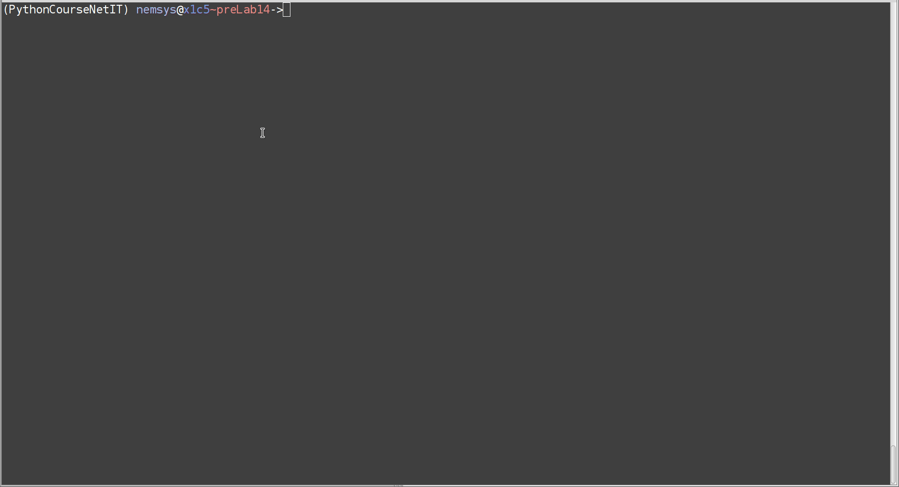
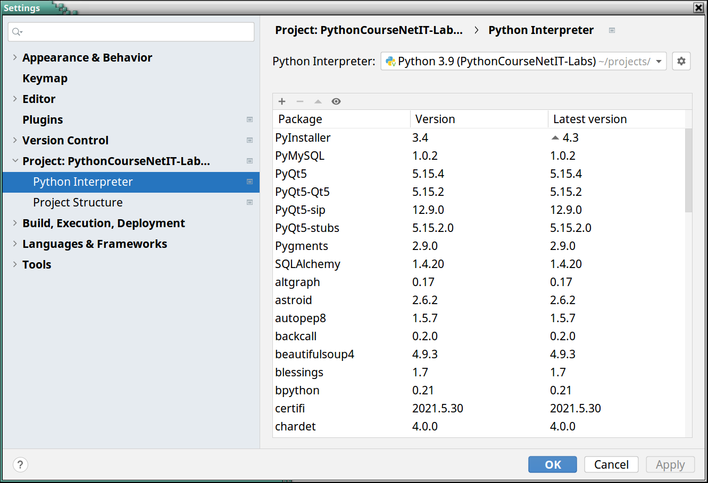
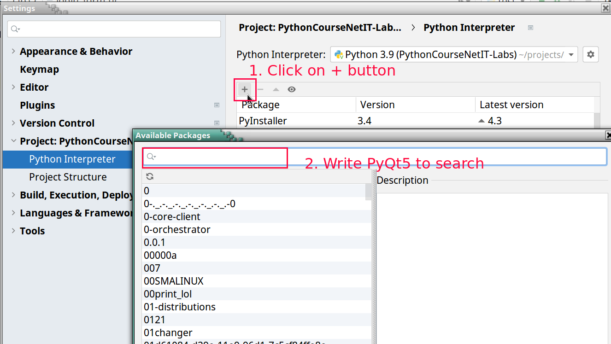
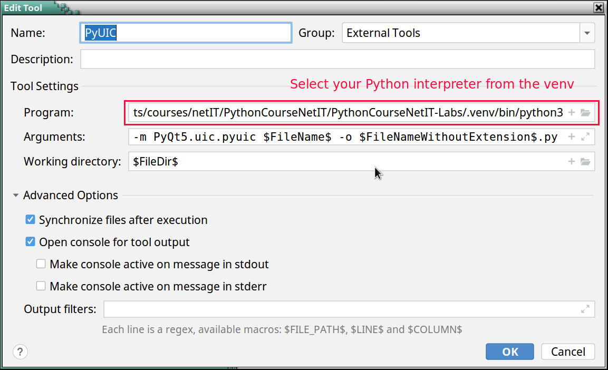
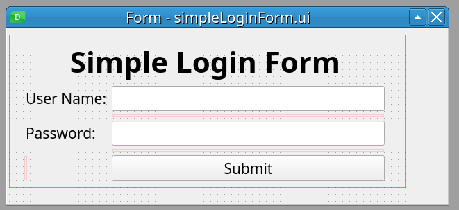

Keyboard shortcuts:
N/СпейсNext Slide
PPrevious Slide
OSlides Overview
ctrl+left clickZoom Element
If you want print version => add '
?print-pdf' at the end of slides URL (remove '#' fragment) and then print.
Like: https://wwwcourses.github.io/...CourseIntro.html?print-pdf
PyQT-Introduction
Created for
Iva E. Popova, 2016-2024,

PyQT Overview and Set Up
What is PyQT?
- PyQt is a set of Python bindings for Qt application framework for building traditional Graphical User Interface (GUI) desktop applications
Qt (pronounced "cute") framework is a widget toolkit for creating GUIs as well as cross-platform applications that run on various software and hardware platforms such as Linux, Windows, macOS, Android or embedded systems with little or no change in the underlying codebase while still being a native application with native capabilities and speed.
[Reference: Qt @wikipediq]- Qt includes powerful features for networking, threads, regular expressions, SQL databases, SVG, OpenGL, XML, and many other
- As PyQt alternatives for building GUIs in Python, there are Tkinter, wxPython, PySide2
- PyQt is available several versions.
- PyQt4: no longer supported and no new releases will be made.
- PyQt5: official docs.
- PyQt6: official docs (this is the version which will be used in the course)
- Differences Between PyQt5 and PyQt6
PyQt6 Installation
- As python package from PyQt6 Project which will install the GPL version of PyQt6 (the recommended way)
- Reference: Installing PyQt6
# on activated virtual environment:
pip install PyQt6
# check install info:
pip show PyQt6
Test the installation
- Create the
pyqt_test.pyfile and run it.
import sys
from PyQt6.QtWidgets import QApplication,QWidget
app = QApplication(sys.argv)
window = QWidget()
window.setWindowTitle('PyQt6 App Works')
window.setGeometry(100, 100, 500, 500)
window.show()
sys.exit(app.exec())
Test the installation
You should see a window like:

Qt Tools: QtDesigner
- QtDesigner is a Qt tool that provides a what-you-see-is-what-you-get (WYSIWYG) user interface which speeds the creation of GUIs for PyQt applications
- QtDesigner creates .ui files (which contains an XML description of the GUI).
- I.e., QtDesigner is platform and programming language independent.
- Reference: Qt Designer Manual
{kind=link}
QtDesigner Installation
- As python package: pyqt6-tools (the recommended way):
- Note, that pyqt6-tools doesn't support Python 3.10 yet
- Or as standalone application for Windows/MacOS (use it only if you have problems with python packages):
- Install Qt Designer on Windows or Mac
Qt Designer normally ships as a part of Qt Creator. This is Qt's official editor and lets you do a lot more than just graphically design user interfaces. It is a full-fledged and very powerful C++ IDE. But For PyQT development you don't need the whole Qt Creator (which is huge).
You can install only the Qt Designer in two ways:
# make sure you're on activated virtual environment:
pip install pyqt6-tools
# check install info:
pip show pyqt6-tools
QtDesigner - "HelloWorld" GUI
- Start QtDesigner:
- If you installed QtDesigner as Python package, just write in your activated virt. environment
- If you have installed the QtDesigner as standalone app, you should have an icon for it
- Now you can create your first "HelloWorld" app GUI: 
pyqt6-tools designer
{kind=link}
Qt Tools: pyuic
- PyUIC (Python User Interface Compiler) is a Qt user interface compiler for Python
- The pyuic reads a user interface definition file (.ui) in XML as generated by Qt Designer and creates corresponding Python class
- Reference: pyuic6
- Note, that
pyuic6is included in thePyQt6-tools, so you do not need to install it. Just use it. - Let's compile our .ui file created by QtDesigner into Python code:
pyuic6 helloWorld.ui -o helloWorld.py
Using PyQt with VSCode - Optional Topic
Using PyQt with VSCode - Optional Topic
- VSCode have many extensions which facilitates the work with PyQt. You can check:
- PYQT Integration - an extension help you coding PYQT form in vsocde. Support ".ui", ".qrc", ".pro", ".ts" files.
Setup PyCharm for PyQt6 - Optional Topic
Setup PyCharm for PyQt6 - Optional Topic
PyCharm - Basic Configuration
- Create/open a new project
- Make sure you have installed the needed project dependencies:
- You need
PyQt6,PyQt6-sipandPyQt6-tools

{kind=link}
PyCharm - add missing dependencies
You need to perform next steps only if you don't have PyQt6, PyQt6-sip and PyQt6-tools packages
- In Project Interpreter interface click the
+and install PyQt6, PyQt6-sip, PyQt6-tools

{kind=link}
PyCharm - Configure StartQtDesigner Tool
- From
File => Settings => Tools => External Toolsclick the+button - Create StartQtDesigner Tool with next settings:
{kind=link}
- Now you can start QtDesigner from PyCharm
PyCharm - Configure OpenWithQtDesigner Tool
- From
File => Settings => Tools => External Toolsclick the+button - Create OpenWithQtDesigner Tool with next settings:
{kind=link}
- Now you can open and edit a
uifile with QtDesigner
PyCharm - Configure PyUIC
-

- Program: Select python3 interpreter from your virtual environment:
- Arguments:
-m PyQt6.uic.pyuic $FileName$ -o $FileNameWithoutExtension$.py - Working directory:
$FileDir$
{kind=link}
Reference
Build your Qt App
Build your Qt App
- You can use your ui, converted to py class in your python app
import sys
from PyQt6.QtWidgets import (
QApplication, QMainWindow
)
from helloWorld import Ui_MainWindow
class Window(QMainWindow, Ui_MainWindow):
def __init__(self, parent=None):
super().__init__(parent)
self.setupUi(self)
if __name__ == "__main__":
app = QApplication(sys.argv)
win = Window()
win.show()
sys.exit(app.exec())
QtDesigner Hands on
QtDesigner Hands on
GUI templates
| Template | Form Type | Widgets | Base Class |
|---|---|---|---|
| Dialog with Buttons Bottom | Dialog | OK and Cancel buttons laid out horizontally on the bottom-right corner | QDialog |
| Dialog with Buttons Right | Dialog | OK and Cancel buttons laid out vertically on the top-right corner | QDialog |
| Dialog without Buttons | Dialog | No | QDialog |
| Main Window | Main Window | A menu bar at the top and a status bar at the bottom | QMainWindow |
| Widget | Widget | No | QWidget |
Qt Designer's Widget Box
- The widget box provides a selection of standard Qt widgets, layouts, and other objects that can be used to create user interfaces on forms.
- You can add objects to a form by dragging the appropriate items from the widget box onto the form, and dropping them in the required locations.
{kind=link}
Create Simple Login Form GUI with QtDesigner - Live Demo
- Get familiar with widgets using "Widget Box"
- Inspect Widgets's Objects using "Object Inspector"
- Inspect Object Properties using "Property Editor"

{kind=link}
References && Self-Learning
References && Self-Learning
Official Docs
The Qt team maintains a thorough documentation, as well as user guides, tutorials, etc. for working wit QtDesigner
- Getting to Know Qt Designer
- A Quick Start to Qt Designer
- The full manual: Qt Designer Manual
QtDesigner Layouts
Exercises
Exercises
Task: Appointment Details Tasks
Try to make an app, which will have the widgets given on next picture:

How a GUI app works?
How a GUI app works?
A GUI App (event-driven) processing
- A GUI App processing model is event-driven
- An event can be any user action, like click, scroll, input etc.
- An event handler is a function which defines the actions that must be executed after an event is triggered.

Understand the structure of a PyQt Application
Understand the structure of a PyQt Application
Minimal structure of a PyQt App
# 1. import needed QtWidgets classes
from PyQt6.QtWidgets import QApplication, QWidget
# 2. the main app instance for our application.
app = QApplication([])
# 3. Create Qt widget, which will be our main window.
window = QWidget()
# 4. show the window
window.show()
# 5. Start the event loop
app.exec()
- The QApplication class manages the GUI application's control flow and main settings
- We need one (and only one) QApplication instance per application.
- The QApplication instantiation must be set before any kind of widget or window creation!
- The QtWidgets module provides a set of classes corresponding to UI elements which we can use to create our GUI app.
- The QWidget class is the base class of all user interface objects.
- widget is a generic name for any kind of GUI item, like window, button, label, checkbox...
Using UI Compiled files as modules
Using UI Compiled files as modules
Multiple Inheritance - the best variant
import sys
from PyQt6.QtWidgets import QApplication, QMainWindow
# Import the compiled UI module
from MainWindow import Ui_MainWindow
class MyApplication(QMainWindow, Ui_MainWindow):
def __init__(self):
super().__init__()
# Set up the user interface from Designer
self.setupUi(self)
# Connect signals and slots here, or setup other initializations
if __name__ == "__main__":
app = QApplication(sys.argv)
mainWindow = MyApplication()
mainWindow.show()
sys.exit(app.exec())
Recap class inheritance in Python
Make sure you really understand the concept of class inheritance in Python
# the base class
class Parent:
def __init__(self,*args, **kwargs):
print(f'{self} constructor execute')
print(args)
print(kwargs)
# the derived class, which inherits from base class:
class Child(Parent):
def __init__(self, *args, **kwargs):
super().__init__(*args, **kwargs)
p1 = Parent(1,2,a=3,b=4)
c = Child(5,6,c=7,d=8)
Hand Code the UI of a Login Form Widget
Hand Code the UI of a Login Form Widget
Why?
- The code produced by pyuic6 is overwhelmed and not clean.
- Hand-coding could be even faster (if you have know your IDE well) than using the QtDesigner.
- You can really learn Qt App methodology only if you have hand-coded a simple GUI App.
- For next examples, we'll be using the template we've already created:
- Tip: you can setup a custom snippet with this template in your editor.
- For PyCharm see Tutorial: Creating and Applying Live Templates (Code Snippets)
- For VSCode see: Snippets in Visual Studio Code
QWidget class
- QWidget is the parent class of all other widgets (including QMainWindow)
- All properties and methods of
QWidgetclass will be also available in any other widget. - When a QWidget is created without a parent and its show() method is called, it becomes a top-level window
- When we use it as a top-level window (as we did with in our template), there are some window-specific properties we can set.
- note, that the cursor value is an enum type, defined in QtCore module
- Every property of a
QWidgetobject has its Access function, which allows you to set that property after the object is created - Reference: QWidget Class
window = MainWindow(cursor=qtc.Qt.CursorShape.WaitCursor)
# equivalent to example above
window = MainWindow()
window.setCursor(qtc.Qt.CursorShape.WaitCursor)
Primary and Child Widgets
- Any QWidget that has no parent will become a window, and on most platforms will be listed in the desktop's task bar.
- Such window is called primary window
- Usually, in our GUI App we want only one primary window.
- If we pass a parent argument when we create new widget, that widget will be a child of the prent widget and will become a part of its parent.
- Reference:
- Primary and secondary windows
Create user input widgets
- Of course, we did not see the created widgets, because they are not attached to our main window
- We can attach them directly to out main window by passing it as parent argument to QLineEdit() constructor :
- But we did not set the geometry of our main windows, so the result is not what we want.
- References:
- QLineEdit Class
- EchoMode Property
# --------------------------- your code starts here -------------------------- #
# create user input widgets:
user_name_input = qtw.QLineEdit()
password_input = qtw.QLineEdit()
#
password_input.setEchoMode(qtw.QLineEdit.EchoMode.Password)
# ---------------------------- your code ends here --------------------------- #
# create user input widgets:
user_name_input = qtw.QLineEdit(self)
password_input = qtw.QLineEdit(self)
Window Geometry

- To set our window geometry we can use the
geometryproperty or its accessor method:setGeometry - Reference: Window Geometry
class MainWindow(qtw.QWidget):
def __init__(self , *args, **kwargs):
super().__init__(*args, **kwargs)
#set window geometry
self.setGeometry(300, 200, 500, 300)
...
Widget Position
- In order to set a widget position within its parent widget, we can use the
move(int x, int y)QWidget widget method - But there is a better approach - to use a Layout for children positioning
- Reference: pos : QPoint
class MainWindow(qtw.QWidget):
def __init__(self , *args, **kwargs):
super().__init__(*args, **kwargs)
#set window geometry
self.setGeometry(300, 200, 500, 300)
# create user input widgets:
user_name_input = qtw.QLineEdit(self)
password_input = qtw.QLineEdit(self)
user_name_input.move(20, 10)
password_input.move(20,50)
Layout Management
- The Qt layout system provides a simple and powerful way of automatically arranging child widgets within a widget to ensure that they make good use of the available space
- Qt provides many Layout Classes useful for different use-cases.
- The setLayout() method applies a layout to a widget. And the layout takes care of the following tasks:
- Positioning of child widgets
- Sensible default sizes for windows
- Sensible minimum sizes for windows
- Resize handling
- Automatic updates when contents change:
- To create more complex layouts, you can nest layouts inside each other.
- References:
- Layout Management @Qt
- Layout Management @Qt for Python
QFormLayout Class
- For our Login Form Wdget is best to use the QFormLayout Class
- The QFormLayout class manages forms of input widgets and their associated labels.
- References:
- QFormLayout @Qt for Python
- QFormLayout Class @Qt

Create the Form Layout
- For our Login Form Wdget is best to use the QFormLayout Class
# --------------------------- your code starts here -------------------------- #
# create user input widgets:
user_name_input = qtw.QLineEdit()
password_input = qtw.QLineEdit()
password_input.setEchoMode(qtw.QLineEdit.EchoMode.Password)
# create the submit button:
btn_submit = qtw.QPushButton('Login')
# create Form Layout and layout widgets in it
form_layout = qtw.QFormLayout()
form_layout.addRow('User name: ', user_name_input)
form_layout.addRow('Password: ', password_input)
form_layout.addRow(btn_submit)
# apply the form_layout to our widget
# this will attach our form widget's into main window
self.setLayout(form_layout)
# ---------------------------- your code ends here --------------------------- #
{kind=link}
Introduction to Signals And Slots
Signals And Slots Overview
What are Signals And Slots?

- Signals and slots are used for communication between objects.
- For example, if a user clicks a Close button, we probably want the window's close() function to be called.
- A signal is s notification that the event has happened
- A slot is a function that is called, when that event occurs.
- In order to establish communication between objects, we connect a signal to a slot to achieve the desired action
What are Signals And Slots?
- A Signal is a special object property that can be emitted in response to a event.
- Usually, we emit signals when the object's internal state has changed.
- A Slot is an object method that can receive a signal and act in response to it.
- In fact, a slot can be not only a Qt object method, it can be any Python callable.
- When a signal is emitted, the slots connected to it are usually executed immediately
Signals and Slots Example
- A QPushButton has a clicked signal that is emitted whenever the button is clicked by a user.
- The QWidget class has a close() slot that causes it to close if it's a top-level window.
- We could connect the two like this:
self.btn_cancel = qtw.QPushButton('Cancel')
self.btn_cancel.clicked.connect(self.close)
Common predefined Signals and Slots
- All buttons have next signals and slots: QAbstractButton Slots and Signals
- QLineEdit object has: QLineEdit Slots And Signals
- All QWidget objects have next QWidget Slots and QWidget Signals
Passing data between signals and slots
Passing data between signals and slots
- Signals can also pass data to the slots they are connected.
- For example, QLineEdit object has a
textChangedsignal that sends the text entered into the widget along with the signal - The QLineEdit object also has a
setText()slot that accepts a string argument. We could connect them like this:
self.line_edit1 = qtw.QLineEdit()
self.line_edit2 = qtw.QLineEdit()
self.line_edit1.textChanged.connect(self.line_edit2.setText)
self.mainLayout = qtw.QVBoxLayout()
self.mainLayout.addWidget(self.line_edit1)
self.mainLayout.addWidget(self.line_edit2)
self.setLayout(self.mainLayout)
Task: Print in console the text in a lineEdit
- Create a Widget with 1 QLineEdit object (
line_edit1) in it - We want on every change to the content of
line_edit1that content to be printed in the console.
Solution
Click on "view raw" link at gist's bottom right corner to view the code, ready for copy-paste :)
Custom signals and slots
Custom slots
Custom Slots
- Any Python callable can play the role of a slot.
- Using the pyqtSlot() decorator allows us to specify the type of the arguments that will be passed to the slot.
- pyqtSlot() is a decorator that takes a Python callable and returns a slot object.
@qtc.pyqtSlot(str)
def some_slot(*args):
for arg in args:
print(arg)
Custom Signals
Defining Custom Signals
- Custom signals are defined using the
pyqtSignal()function. - pyqtSignal() returns a signal object, which is is a wrapper around the Python callable that can be connected to a slot.
- Custom signals must be defined as class attributes.
- Custom signals have the emit()method, which is used to emit the signal.
- Reference:
- Defining New Signals with pyqtSignal
- emit
# create custom signal which will carry a string data type data:
sig_submit = qtc.pyqtSignal(str)
@qtc.pyqtSlot(bool)
def onSubmit(self):
self.sig_submit.emit(self.edit.text())
self.close()
Sharing data between widgets using custom signals and slots
Sharing data between widgets using custom signals and slots
- At its core, the signals and slots mechanism can be seen as a way for any two objects in an application to communicate while remaining loosely coupled
- Suppose you have a program that pops up a form window.
- When the user finish filling the form and submits it, we need to get the entered data back to the main application class for processing.
- There are a few ways we could approach this. One is the main application to watch for click events on the pop-up window's Submit button, then grab the data from its fields before destroying the dialog
- But that approach requires the main form to know all about the pop-up dialog's widgets and any refactoring of the pop-up would risk breaking code in the main application.
Demo: tightly-coupled approach
Note that MainWindow must know form's implementation
Demo: loosely-coupled approach
Note that MainWindow don't care about form's implementation, it just pass and receive data